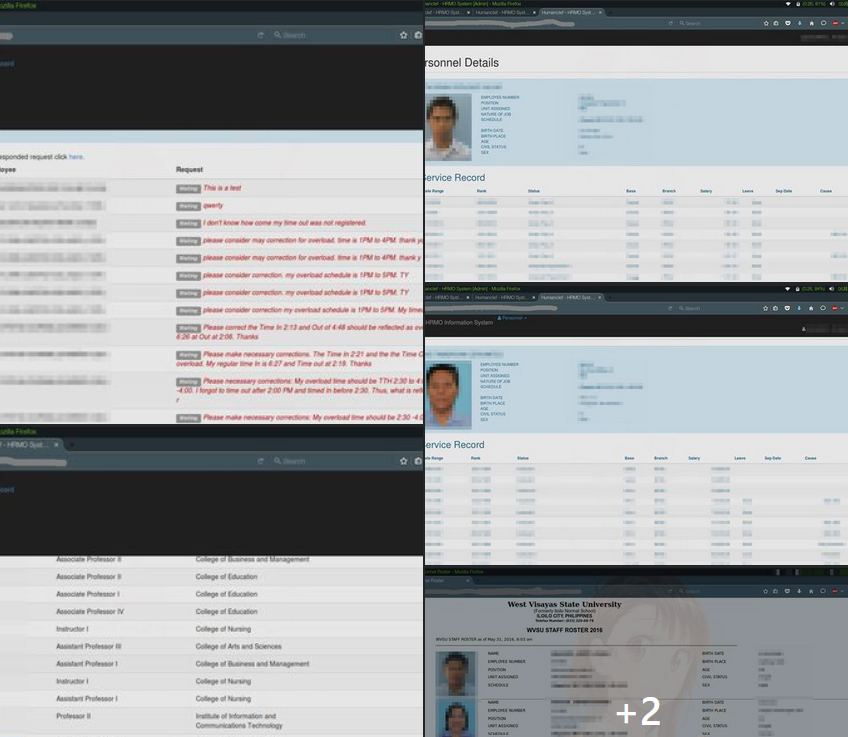
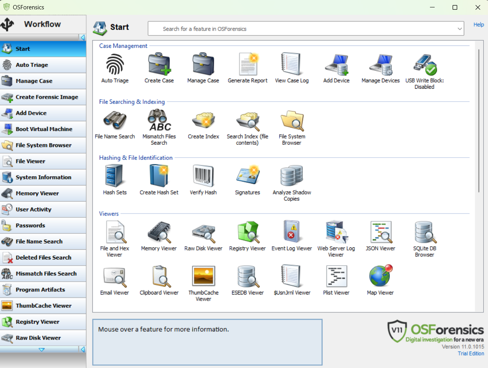
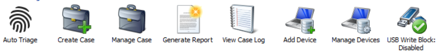
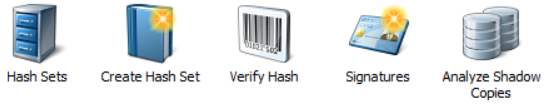
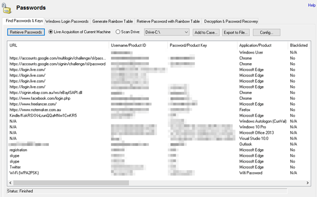

Crime Scene Investigation
for Cyberforensics


Use the navigation buttons or the arrow keys to proceed to the remaining slides.
F
You can also press > >F < < on your keyboard to show your presentation in fullscreen mode.
This presentation is best explored with up-to-date web browsers.
Securing a Computer Incident or Crime Scene
Investigators secure an incident or crime scene to preserve the evidence and to keep information about the incident or crime confidential.
Information made public could jeopardize the investigation. If you're in charge of securing a computer incident or crime scene, use yellow barrier tape to prevent bystanders from accidentally entering the scene.
Use police officers or security guards to prevent others from entering the scene
For major crime scenes, computer investigators aren't usually responsible for defining a scene’s security perimeter. These cases involve other specialists and detectives who are collecting physical evidence and recording the scene.
For incidents primarily involving computers, the computers can be a crime scene within a crime scene, containing evidence to be processed.
Cyber Crime Investigator
- specialized professional who investigates and analyzes cyber crime incidents, such as hacking, identity theft, fraud, and other types of cyber-related crimes.
Investigators identify the culprits and gather digital evidence that can be used to prosecute them in court.
Cyber Crime Investigation Process
- Initial Response and Assessment
- Evidence Collection and Preservation
- Evidence Analysis
- Reporting and Documentation
Initial Response and Assessment
- Secure the scene to prevent data corruption or destruction.
- Identify potential sources of evidence (computers, mobile devices, network devices, cloud storage).
- Document the initial state of the system, including screenshots and system logs.
- Use specialized forensic tools to acquire digital evidence without altering the original data.
- Create forensic images of storage devices to preserve their integrity.
- Collect volatile data (system memory, network traffic) using memory acquisition techniques.
Evidence Collection and Preservation
- Analyze collected data to identify patterns, anomalies, and potential leads.
- Use forensic software to extract and examine files, emails, browsing history, and other digital artifacts.
- Correlate findings with other evidence to build a strong case.
Evidence Analysis
Reporting and Documentation
- Prepare detailed reports documenting the entire investigation process.
- Present findings in a clear and concise manner, suitable for legal proceedings.
- Adhere to legal and ethical guidelines throughout the investigation.
Challenges in Cyber Crime Investigation
Challenges
Data can be easily altered or destroyed.
| Type | Life Expectancy |
| Hard Disk Drives (HDDs) | 4-7 years |
| Solid-State Drives (SSDs) | 5-10 years |
| Flash | 10 years average use |
| CD-R | 50-100+ years |
Challenges
Can be complex: Investigators must understand the intricate network configurations and software systems.
Challenges
Technology is rapidly evolving.
Challenges
Legal and Ethical Considerations: Adhering to legal frameworks and privacy regulations.
Best Practices
Follow Established Procedures: Adhere to standard operating procedures and forensic best practices.
Utilize Specialized Tools: Employ advanced forensic software to efficiently analyze digital evidence.
Stay Updated: Continuously learn about new technologies and emerging threats.
Collaborate with Experts: Work with other experts, such as network analysts and digital forensics specialists.
Document Everything: Maintain detailed records of all actions taken during the investigation.
Republic Act No. 10175 or the Cybercrime Prevention Act of 2012 created the Office of Cybercrime (OOC) within the DOJ and designated it as the Central Authority in all matters relating to international mutual assistance and extradition for cybercrime and cyber-related matters.
Philippine Cases
First Philippine Hacking Case (2005)
Filipino hacker JJ Maria Giner pleaded guilty on Wednesday to hacking the government portal “gov.ph” and other government websites
Giner was sentenced to one to two years of imprisonment and will pay a fine of 100,000 pesos.
Comelec Data Breach (2016)
A significant data breach affecting the Commission on Elections (Comelec) exposed personal information of over 55 million Filipino voters.
Cebuana Lhuillier Data Breach (2019)
Hackers compromised the personal information of over 900,000 customers of the pawnshop and remittance company.
In our School
WVSU MIS Hacked by a CICT Student (2016)
The website was vulnerable to SQL Injection and XSS. The student Bypassed the HR Admin account and got a lot of personal/job information about the staff, personnel, and faculties in WVSU Main Campus.
The MIS took action and warned the student, it was then followed by a public apology from the student side.
School Data Exposed by the Student Hacker
Acquiring Evidence with OSForensics
OSForensics
A complete toolkit to extract forensic data (files, emails, deleted files, user activity, passwords) from computers.
OSForensics
OSForensics - Case Management
Can group all gathered evidence together into an OSF Case file for later use. All data is cryptographically hashed to prevent tampering.
OSForensics - Quick File Search
Search for files many times faster than the search functionality in Windows.
OSForensics - Hash and Identify
Using advanced hashing algorithms OSForensics can create a digital identifier that can be used to identify a file.
OSForensics - Hash and Identify
OSForensics allows you to use Hash Sets to quickly identify known safe files (such as operating system and program files) or known suspected files (such as viruses, trojans, hacker scripts) to reduce the need for further time-consuming analysis.
OSForensics - View More
Can look on various file contents, memory, logs and databases.
OSForensics - Artifacts and Passwords
Using advanced hashing algorithms OSForensics can create a digital identifier that can be used to identify a file.
OSForensics - Artifacts and Passwords
OSForensics can decrypt old document files and can also use bruteforce attack to decrypt documents.
Please prepare for an individual quiz next meeting (coverage: 03 & 04)
Thank You!
This presentation is made of and HTML 5